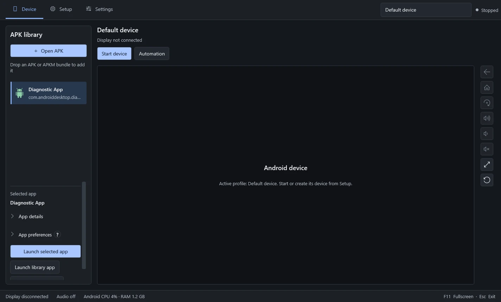
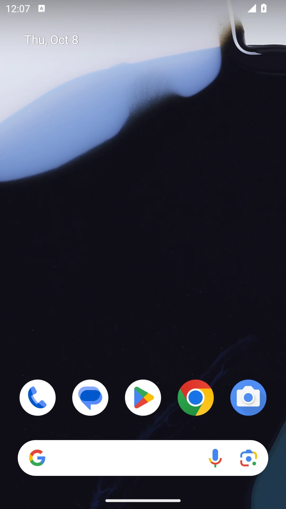
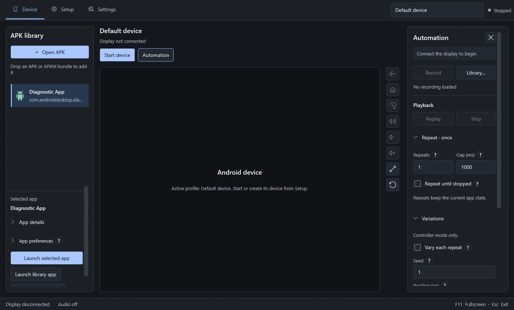
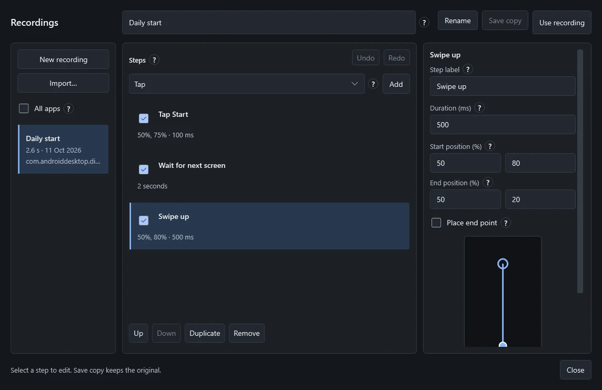

A home for the whole session: your apps on the left, Android in the centre and recording controls close to hand.
Library · Device · Automation

02 / The app library
Drop it in. Make it yours.
Import an APK or APKM bundle, install it and launch it from the library. App icons make finding your way back easy.
APK + APKM / Persistent app data
03 / Space for the device
Let Android take the stage.
Google’s Android Emulator sits inside a focused Windows interface. Navigation, volume and fullscreen controls stay alongside the display.
A real Android runtime / A Windows home

04 / Repeat with intention
A sequence. On your terms.
Record interactions and save a named sequence. Replay once, repeat a chosen number of times or keep going until you stop it.
Named recordings / Adjustable repeat gaps

05 / Refine the details
Every gesture. Editable.
Tap, Hold, Swipe, Key and Wait. A separate editor gives each step its own timing and position, without taking over the Android view.
Reorder / Duplicate / Disable / Undo

06 / Back in place
Separate parts. One experience.
Practical tools that work together. Your apps and saved data stay with the device, ready for the next session.
Built for returning to
00 / Windows shell
01 / App library
02 / Android device
03 / Automation
04 / Recording editor
Interface study / Current development build
Scroll to explore ↓
01 / 06
02 / The art of repetition
A little repetition. A lot of control.
Gesture study / Swipe up500 ms
01 / Position02 / Duration03 / Direction
Not just recorded. Composed.
A recording is a sequence you can work on. Change the order. Give a swipe more time. Disable a step without deleting it. Save a copy and try a different approach.
01
Tap Start50%, 75% / 100 ms
02
Wait for next screen2 seconds
03
Swipe up50%, 80% → 50%, 20% / 500 ms
Illustrative sequence / Matches the editor preview
03 / Pick up where you left off
Your device. Your space.
Keep different devices in separate profiles, remember preferences for each app, and back up a device when you need to. Apps and saved data stay with the device between sessions.
Device profilesApp preferencesDevice backups
Profile / 0303
Profile / 0202
Default device01
Apps Preferences Saved data↳
Separate spaces. A familiar starting point.
04 / Under the surface
A native home. A real Android core.
Built with C# and WPF around Google’s Android Emulator and a local display gateway. First-time setup finds an existing runtime or prepares the missing components.
03 / RuntimeAndroid EmulatorApps / Games / Saved data
Windows x64Hardware virtualisation12 GB free disk spaceInternet for first-time setup
An ongoing project by Jake Hutson
Built with intent. Still taking shape.
DroidFrame is in active development. Compatibility, longer sessions and fresh-PC setup are still being tested. The repository remains private while the product takes shape.
Interface screenshots show the current development build with sample app data and performance values. Diagrams and the cover sculpture are illustrative.